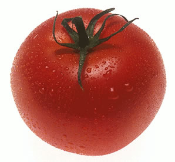

Chicken and Tomato Soup
Ingredients
1 litre of chicken stock (fat skimmed) –made from chicken breast
400g chicken breast
4 tomatoes, chopped roughly
1 small tin of tomato puree
1 large onion, peeled and chopped roughly
2 tbsp fresh oregano
2 tbsp fresh basil
2 tbsp fresh rosemary
2 tbsp fresh thyme
2 tbsp fresh sage
1 tbsp fresh parsley
1 tsp black pepper, freshly ground
salt to taste
Method
Bring the water to the boil and add the chicken breast, onion and half of the oregano, basil, rosemary, thyme, sage and pepper, and salt to taste. Leave to simmer 30 minutes. Then take out the chicken breast and sieve the stock, discarding the residue. Let the chicken stock cool down and skim off the fat that floats near the surface. The basic broth is now ready for use. Keep the chicken breast for further use.
Bring the basic broth to the boil and stir in the tomato puree until it is completely dissolved. Chop the chicken breast that was used for preparing the basic broth into small cubes. Add the chicken breast cubes, tomatoes and the other half of the oregano, basil, rosemary, thyme, sage and pepper to the soup and leave to simmer 5 minutes. Pour the soup into soup bowls and serve with some parsley leaves.
Printer Friendly Version

Delicious Recipes
Listed below are links to five fantastic recipies which you can download or print off, and then use at home to make some great, homely food.
Nordic Chicken, with Rhubarb
Chicken and Tomato Soup
Fruit Salad
Pancakes
Fruit Smoothie
© Daniel Ingram, 2011 ~ Site Map
All content within is provided for general information only, and should not be treated as a substitute for the medical advice of your own doctor or any other health care professional. We are not responsible or liable for any diagnosis made by a user based on the content of this website. We are not liable for the contents of any external internet sites listed, nor does it endorse any commercial product or service mentioned or advised on any of the sites. See our Links Policy for more information. Always consult your own GP if you're in any way concerned about your health.